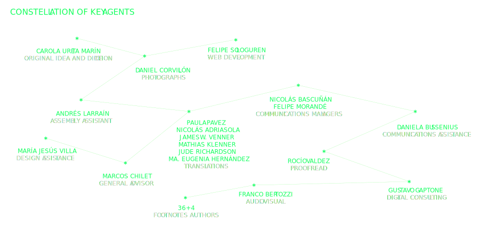
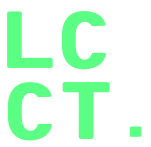
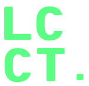

- 00000


This project aimed to capture the memory engraved on the walls of the street that was the main protagonist of the demonstrations during the Social Uprising in Chile –Libertador Bernardo O’Higgins Avenue, commonly known as la Alameda–, exposing almost 2.4 km of its extension as a piece of art in itself. The record, made on the 36th day of the outburst and consisting of 136 contiguous photographs of the southside of la Alameda –between Seminario and Nataniel Cox streets, in front of Palacio de La Moneda (the government palace)–, is available on: www.laciudadcomotexto.cl. This artwork is an invitation to travel along this path to read the parchment of façades formed by loose texts written in the city, so that everyone can choose and create their own interpretation. It is also a possibility for people, both Chilean and foreign, to experience this continuous flow of citizens shouting, painting, jumping, and marching throughout the demonstrations. Available to everyone, this photographic journey immortalizes the history of our country. The free global access to this archive allows for a generating of studies, research and multiple analyses of this crisis from different disciplines and fields of knowledge.
In this context, the appropriation of the street and of public space has been the setting for the protests and the best expression of Chilean society as a whole. The street, as a shared space, has turned into a place to meet, talk, and dance, a place for barricades, trenches, and commerce; a multipurpose court for everything… and also, it has become an open book. Its façades have become the pages of this book, the canvas where the demands, events, statements, characters, news, codes, and many others, have been drawn; fixing these messages almost like in a diary of the contingency that accompanies the citizens’ daily lives. But this canvas of walls is not enough, and it expands organically over bus stops, pavements, fences, urban furniture and even over the ground itself, which today forms part of this unique graphic record that reflects the local imagery of the historical period that the nation is living. Creativity, eloquence, humour and violence have awakened in people to reflect all the discomfort accumulated after so many years of constant abuse of people.
The manual and digital work that I carried out during five months thanks to the record of a photographer and friend, Daniel Corvillón, allowed me to create this kilometric canvas immortalising the demands, slogans, phrases, characters, and messages, among others, that were chanted and defended in the streets and that now have been erased not only by layers of paint but also by the pandemic context of COVID-19. The invitation, then, is to experience or revive the feeling of walking along the streets of Santiago on the 36th day of the Social Uprising.
CAROLA URETA MARÍN
On October 18, 2019, Chile experienced what was called ‘El Estallido Social’ (the Social Uprising); one of the greatest political crises in its history. Triggered by a subway fare rise of CLP 30 (USD ~0,042) in the capital, it was an explosion of demands and of social discontent as a result of years of citizens’ rights infringement. The most transversal claim was the concept of “dignity”, that is, the struggle to achieve a dignified life for all Chileans where rights and basic services –such as health, education, housing and pensions– were guaranteed for all without distinction. After a few days of demonstrations all the promises of almost 30 years of post military dictatorship governments were broken, and the “normality” in which Chileans were assumed to live was no longer going to be accepted. Within this scenario no person, institution, discipline or corner of the country was left out of the debate.
First of all, I would like to thank all those who participated in this initiative that started with the sole intention –and question– of how to contribute from my field of knowledge to this social crisis that affects us all. This completely ‘self-managed’ project has been possible thanks to the collaboration of multiple people who are not only in Chile but also abroad, who wanted to contribute to the memory of our territory. First of all, I would like to thank photographer Daniel Corvillón for his confidence, who believed in the project from day one and with whom we designed a method for the day of the photographic record, being able to capture all the necessary images that compose the final montage. Secondly, I am thankful for the motivation and professionalism of Felipe Sologuren who, with his digital mastery, developed the website making tangible the conceived design and suggesting many technical solutions to even make the dream of the laser beams come true. To Andrés Larraín who, with his expertise as a photographer, guided me through parts of the image assembly process, and to María Jesús Villa who, with her patience and eye for detail, contributed with the double page photo sequence. To Paula Pavez, Jude Richardson, James W. Venner, Nicolás Adriasola, Mathias Klenner and María Eugenia Hernández who translated the texts into English in order to expand the scope of the content. To Nicolás Bascuñán for his essential contribution in charge of the project’s communication, both in Chile and internationally, and to Daniela Bussenius for contributing to its visibility in regions. To Gustavo Gaptone for giving the first look to the website and to Franco Bertozzi for his audiovisual work that supported social networks. To Rocío Valdez for her precise style editing, and the national graphic artist Vicente Larrea for his belief in the project and for motivating other great collaborators to write. To my soul sister, Sandra, who always helps me and gives me the strength to persevere in my ideas; and finally to my dear friend Marcos Chilet, a loyal colleague in whose advice and criteria I deeply trust.
Finally, thank the footnotes authors who surprised me with their beautiful texts so different, unique and that can generate multiple reflections from this common platform that was the Alameda on the 36th day. Thank you for collaborating, dedicating a little of your time To The City as Text and thank you for helping me to carry out this valuable project that seeks to be a contribution within the field of Chilean graphics and our history as a country.
Día 36th of Social Uprising in Chile | Santiago| Chile
#noseborra
#laciudadcomotexto
#chiledesperto
 



“Chile woke up, tell me something prettier than that”, is the phrase that is found in the structure of the bus stop. From here I see this new city, chaotic, rowdy..., but alive, more alive than ever. Through here the runaway boredom of neoliberal order passed by, when we grew tired of being people of mortgaged life and we got messy, we got overflowed with creative and dismissal rage to be again the throbbing and constituent people. The walls of Chile, like a palimpset, show the pain and hope.
I am still at the bus stop.
How far will the rout go?...
“Until dignity becomes a habit”.
The wall like a blank sheet where history is written, the day to day of the citizenship that deploys, brush in hand, leaving the ephemeral record of their hopes and desires so that tomorrow, new protesters cover them with new slogans, dripping paint and sweat and desires, scratching the walls with their fists raised, leaving their mark on the roadside, as they go step by step looking for the light at the end of the tunnel, illuminated by the flash and thunder of the gas bombings and the tears that spring from the stinking gases of repression…
Seminario Street up to Moneda Street Seminario Street seems like a vanishing point It’s not that, but it anticipates entrances and drifts If I go forward, the temperature rises and also the slogans Stopping in the slogans is a memory exercise, they will pass An indelible trace will stay in this construction, for better and for worse It hurts to pass by, but it is agency and activation of accumulated wishes in short time The landscape, definitely changed, and in that gaze exercise, it is expressed by 2.4 kilometers I wonder if that image will still be the eternal trace of the photograph and visual identity of Chile
Fourteen years ago, even though meanings and justifications for the design of these bus stops were sought, for the eyes of the citizens they always looked as an electrocardiogram. Today that interpretation seems prophetic.
The electrocardiogram is the graphic representation of the electric activity of the heart in function of the time. In the current landscape this interpretation takes on a greater meaning. The rage, passion, fury and adrenaline marking the peak of the agitated heart of the people that demands dignity, contrast with the minimal and eventually absent activity that is produced on the other end of this journey where, on the opposite sidewalk, the cold ruler’s stare limits to stubbornly contemplate the place where once was the flame that they thought eternal, but today dying, waits for its end.
It’s New Year’s Eve and we stop by “Plaza de la Dignidad” before going to our party. An eternal sound that remains in my ear and demands dignity. A constant beat that is repeated, amplified by the hands that collide with the metal sheets that shield Telefonica’s tower. It’s a night to celebrate and get lost, but here we are hitting the wall. A nocturne trance between the burning candles honoring those fallen in the fight. A sound, a cry, catharsis and a collective hug; so as not to forget why we wake up every day after 10/18. Now, we loose ourselves to always return.
The Streets and the Magic Pad
The Uprising is an exercise of writing and drawing. Given the provocation to think about the blocks and blocks full of graffitis, I can’t stop thinking about Sigmund Freud’s magic pad. This children’s toy that allows to write and then erase to rewrite or draw. The blackboard was –for Freud– a representation of our psychic apparatus, the events of our life are inscribed in our psyche, but cannot remain as ‘graphos’ forever. The ‘magic pad’ with a simple movement makes the writing disappear, but actually if we take a closer look, each writing remains influencing the writing to come. The unconscious of the magic board; our unconscious; or the one of our city collects that writing which is gone. Today - like Freud’s magic pad- the streets turn white, but underneath those layers of new paint, the old paint continues to speak to us.
With nostalgia I look at those portrayed streets, so colorful and full of content, each brick painted with a message that cries out for a dignified future. They were my daily life until recently, and have become longing in times of quarantine. But they are not the streets that I knew all my life, not at all, those were gray, boring, contained streets. Since October 18, the streets in my city have become a space of freedom and resistance that were built in the heat of the marches, evasions and barricades. They can paint them over and over again, but they will never be able to erase the new world that was drawn on them.
If architecture were a book, the façades would be the cover. It announces what is inside, waiting to be opened. Fear is what drives many to shut the doors from the inside. Because anything from outside is always intimidating. Book covers with small padlocks, like on children’s diaries. If the city were a book, each façade would be a page of that intimacy. Pages that in their contiguity need the chance to sit next to each other. The outside is the orderly intimacy in sight of others. Like in the open shelves of a public library. Everything else is just embellishment and cleanliness.
If the press is a villain, We will paint the walls to speak, The walls are the people`s blackboards, Our voice will never be silenced, That is where we tie up our ideas.
On any given day –that exact day is eternal– muralists come and go filling the walls with slogans that we believe in and demands that we want. On any other given day –that exact day is eternal– the citizens march with banners and flags intoning the slogans and demands of the walls. On any other given day –that exact day is eternal– we all retreat facing repression. On any other given day –that exact day is eternal– few people walk on the sidewalk, giving way to the pandemic, while on this side at least one person walks, the author, making those days an exact and eternal day.
Required visual noise. Overlap of historical events. Trace of what was built or what should be built? How do I record it?
And while the revolt happened,
some,
those of us who were still here,
we were alive and we didn’t know why.
“There can be no keener revelation of a society’s soul than the way in which it treats its children”, Mandela said.
Did you know that we have not even recognized them as citizens in the Constitution?
Because they have been the ones who have carried the greatest burden of violence and those who have known how to set limits and put the body, that the rest of society has not. No + Sename transcends the institution, it is about more respect, visibility, consideration, appreciation. More play, wonder, curiosity, plasticity, empathy. More spaces, participation and opinion. For the children of today, for those who were and for those who will come.
Look: There are clandestine fractal connections around every street. Have you noticed that you can draw a perfect line between a subway entrance turnstile and a barricade? Although ideologically they are in opposite poles, I see them very close. Two constructions designed to control the flow that passes from one side to the other. The frantic loop of a diseased circuit has broken: the city leaks through every pore. Putting a finger over the crack it will only stop the chaos for a few seconds. You have to let the beat drop stick.
The gutter was always my refuge, my place of reflection. Twenty five years ago I thought about becoming an artist, while my mind wandered through different ways of managing that, amid threats, loves, real and imaginary bullets. I still think about them, but from my MAcBook Air. OUR INNER FIGHTS are there, are here, and we fear them more than the bullets (imaginary ones). Without fear. The inner fights exploded. LET’S DO LIKE THEM, We should do that!
They sound in the city concave convex metal
,tak tak tak tak tak
,tak tak tak tak tak
one after another
The skin stands on ;
Our eyes are together
resonating in the matter ,
they will never leave the beats stay there
faintly faint on the walls
as a whole a great noise
background raises a line
which always remain
traktraktraktrak taktaktaktak
interference sharp metal
that breaks the noise/silence
it is alone , it is not ours
it does not remain
it does not resonate
it hurts
, tak tak tak tak tak
The Cave.
The street, like Altamira, offers us the walls as a canvas in a cave. From anonymity, spontaneous drawings emerge, which express in the most primary and visceral way, the message. This, filled with political burden, makes the city scream at us. It face us to the general malaise of a society subjugated for years, which demands changes and a decent way of living. This tour invites us to look, dialogue and above all to reflect on these texts, to recognize ourselves in the messages featured on this imaginary, made in communion and by a new collectivity of people that has awakened.
Each era is reflected in its diversity and quality of expression. // Each time records its mark in the Collective Memory. // Each group repeats its language, purposes and appearances. // Each one marks his body, soul and territory. // Neither for replicating repeated applause,
Nor for abiding by visceral rejection. // Yes for graphing beautiful and positive messages that can educate, persuade and convince many and diverse people, so that together we build a more conscious, human and harmonious Chile. // Adding honest wills, capacities and rigor…………… We Can!!!
The so-called social uprising is for me, a truly popular insurrection. History teaches us that, in those cases, the city walls are the blackboard of frustrated aspirations, hatreds and loves of the common citizen. This was the case during the Bolshevik revolution of 1917, the Mexican agrarian revolution of 1910 or the uprising of Paris in 1968, when the city walls received slogans such as “Forbidden to Forbid” or “Let’s be realistic: ask for the impossible.”
It was evident that, now, the walls of our Alameda de la Delicias would be depositories for the waterfall of retained longings, after dozens of years governed by an exclusionist economic-social model.
Out they came, the invisibles, –those that go by unseen– the time had come to intervene and denounce the inadmissible. In the streets, they were visible silently taking the city; their plain demands for dignity sprayed on buildings, the message read in bleeding letters overhead: “Bread, justice and liberty!” The authority was resting untroubled in their office chairs. While experts joined and put on airs, nearby streets began protesting. Out they came to paint, requesting for basic rights to be restored, neglected, outcasts, those ignored, they found their voice and filled the sky and with that voice they would summon the government they so abhorred.
No authority could stop them people came to paint, a stream denouncing this severe regime, “resign now Mr. Piñera!” From Arica to Punta Arenas, the painted words, as clear as day, ubiquitous and on display, beaming out like a watchful light, guiding us in the dead of night, the face of Catrillanca. Certain work begets restrictions: It shows the southside of the street, The Alameda now complete with everyone’s shared convictions. This unequivocal diction, it travels fast, with no delay, word-of-mouth, in constant relay one by one, ideas are seeded clear demands of all that’s needed to rebuild a vibrant Chile.
With this farewell, the people proclaim their conviction: “With a new Constitution, a new way of life”. Meanwhile, in the avenue, in any place imaginable, the visible letter will be visible –for express delivery– to the indifferent authority who does not listen to the invisibles.
Living the social outbreak abroad, it helped us to find ourselves in a foreign city. It brought us together to act from afar, showing even stronger that we had ALL awakened. That there was no turning back. During those days my foreign friends understood to what extent we are a seismic country. Of extreme changes and violent movements, but also necessary after years gathering so much pressure. I experienced the demonstration with the aerial vision of my cell phone. I was so excited that my throat tightened, it hurt to be away and at the same time I felt, more than ever, united to my country.
In the museum-street blinking is breathing.
I step forward. I breathe in by opening my eyelids. The air is the light. My pupils take in the oxygen of shapes and colours that fill my retinas and thoughts. I breathe out by closing my eyelids. In the darkroom comes the alchemy of the image, it burns.
I take another step. I breathe in, I open. Once again a gust of light.
In museum-street, eyes are lungs. Maybe that’s why they shoot straight at them.
Crown Plaza, crown and square. Its portico resembles a parentheses that opens downwards. A tunnel for passersby. Everything is passing by: The oasis, the crowd, the chanting, the crying, the posters. The crown of tourists that photograph themselves with demonstrators before heading back to the safety of those parentheses that only the crown virus can close. A parenthesis between the state of emergency and the state of catastrophe. Everything is removed but nothing is forgotten. The walls are not the canvas of the rabble: They beat among the crown of power and the pandemic, “Dignity and blindness square”.
And suddenly, All the noise turns into silence, Words become dreamy sunset-colored flowers That silent scream becomes distant and opens some space through light. Breathe. Trees rise from the streets, As green nature little by little finds its way, patiently in presence. Nature itself has a subtle way of transforming all.
We are invited for a particularly special tour. Two thousand four hundred meters along just one sidewalk. How curious it turns out. It’s like having two eyes, we were allowed to peek into life only with one, as if there was also a north should we imagine it, but from its opposite side. But, everything has its explanation; the one in the north is the sidewalk of the Civic Quarter, the forbidden, the institutional, the protected. The one in the south, on the other hand, is the one trod by the soles of the stubborn, of those who aspire one march after another to bring together more hopes Over here, observant and observed, go the insurgents, the dissatisfied, those who do not forgive the unforgivable impunity.
Time after time they have come down from Plaza Italia or Baquedano, or what remains of that plaza. On the left they move on, their dignity held high above. They also march with the left, which refuses to bury the dream, to collaborate with the programming of amnesia, the one that does not count the poor, but counts on them to deny rest to their oppressors.
“Todavía cantamos”*(“We still sing”) yes, and we still march. despite the ahistorical modernity imposed those who deny the motherland and then co-administered by its “democratic” replacements, technocrats pasteurized of every alternative program to the programming of the despoilers. We march, of course we do, those who cannot be bribed, those of us who don’t listen to siren songs of those who wish to pull us off the path, of those who ask us to turn the page in the face of the uncomfortable past, the one which accuses them and shames some; the same past which for us, instead, enlightens and fills the soul with courage.
New Popular Hagiography
The street becomes the space for a popular identity with its own forms of memory and aesthetic expression. One of the most striking manifestations is the resignification of national cultural and political icons in terms of popular religiosity. More than a religious metaphysics, the force of the religious symbol is instrumentalized to elevate the carriers of the popular struggle. The bleeding eye displaces the sacred heart as a symbol of sacrifice (to make sacred), for the sake of an egalitarian society. The visages of Camilo Catrillanca, Alex Lemún, Gustavo Gatica, Fabiola Campillai, High School students, Gabriela Mistral, Violeta Parra, Mon Laferte, Negro Matapacos, Pedro Lemebel, Víctor Jara, Gladys Marín, Clotario Blest, Jorge González and even Felipe Camiroaga superimposed on religious images exemplify this act. This new popular hagiography is the testimony of the popular rebellion against the Chilean oligarchical and hierocratic opression.
Memory and the Enemy
The Enemy knows that the memory consciously weakens in these lands: We prefer to forget the terror and death rather than honor them.
That is why, one day The Walls got reunited in a secret meeting and decided to lecture us: Immortalize “The Battle of Chile”. That way, they told us we would stop having an “Obstinate Memory”.
The agreement got started and the Enemy heard of it, he did everything he could to avoid it, but The Walls knew how to defend themselves and today we all remember the gestation of it, and in front of them we cry and dance celebrating those of us who are here.
(Only in this way can I think far from rage, pain. Every story is a love story. For you, for me, for those who were and those that will come).
My nails, Your hair, My eye, Your smell, My steps, Your footprint, The street, Our Street The Alamedas make their way and do not stop coming.
Checking, it seemed As if someone was watching it As if the answer was based on facts Renewed, it fought As if it had a cause to live Denied, it learned As if it had been destroyed before Reviewing, it fought As if someone was watching it To what it had previously refused Renewed, it seemed As if it had a cause to live Destroyed, then it based on facts Providing, Deciding, As if the answer was based on facts
(San Francisco Church. Built between the years 1562 - 1618)
Here they rape.
The detection of places where violation of fundamental rights of women and girls occur. Corners, buildings, streets, churches, is one of the exercises we do when we link the city with our daily life and the male chauvinist violence that hits our bodies and the bodies of others. Understanding the city form that point allows us to open our senses and pay attention to what is invisible; a dark memory of our life or a piece of paper without sender in the courts of law.
The eradication of sexist violence happens since the feminists questions, intervene and are part of the decisions that are taken in the cities, only that way we will be able to build a feminist city.
Emblazoned in white above a door is the letter “A” within a circle. A call to mythical heroes who stand between the powerless and those who wish to cause indiscriminate harm. A cursory glance reveals the face of the enemy, “ACAB” was painted hurriedly, deliberately and energetically around the “A”. Through the skeleton of a bus stop - its plastic panels and steel benches converted into makeshift shields against the rain of tear gas, water cannons, and truncheons - I see written in the same white paint, a hint of the identity of those who fought on the front line, “SENAME”.
Sometimes we must read in depth what is written on the walls of our cities. Just as Bob Dylan sang, 50 years ago, Something is happening, Ms Jones, there is something we didn’t want, or could not see, until it exploded in our faces. This is what happened to us, in Chile, in October 2019.
What is going on? What is happening to us? The discomfort surrounds everything. It is in the air, it is in our interaction with others, and it is in us.
There is so much we need to understand, there is so much we want to say, but we don’t have the language to do it, we don’t have the words, we don’t have a way. What we say and write in social media fades fast... but we still have the walls, maybe the truth is written on them.
On the pavement I read “Nothing Has Changed Yet ”. I think about everything that’s changed, at least over the last six months. I also remember Longueira claiming that nothing ever happens in Chile. I think of my mum saying “this country has changed a lot, it was so different when I was young”, and five minutes later complaining “this shitty country never changes, it’s always the same”. I think about myself, about my desire for change, and my belief that nothing ever changes. And then, I think of everything that has changed, everything that will change, and the ways in which I have changed.
It’s a great mental exercise to imagine ourselves as static, still, as if to say that nothing changes: To imagine a motionless detail, a single element that never changes, that hides under a veil everything that, in fact, is always changing. And how awful it would be to never change, to be so consistent with myself-yesterday-today-and-always that I have no room to be anyone else.
An outburst of common senses on the concrete Petrified noise Scabs to remember the wounds Tattoos on the city Settled emotions An overflow of the individual being Shared muted memory The end of the dictatorial fears, the emergence of new ones A blending of utopias, intimate, private and public Exquisite corpse Identified enemies Caring as a shield Transgenerational resistance Newen and the profound homeland. “Chile has woken up. Tell me something more beautiful than that” (Alameda-Presidente Juan Antonio Ríos crossing)
There are two dimensions that I want to highlight from “The city as text”. The first is the multiplicity of elements that come together in the landscape that make up this photomontage. The city, far from being a singular and unitary entity, emerges here as a space arranged by a heterogeneity of practices and bodies, writings and walls, infrastructures and wiring, flows and atmospheres. Second, the landscape strongly represents the idea of dissent as the quintessential political moment. The work shows a city in crisis, but at the same time a city that transforms disagreements and differences into a possibility of re-imagining the type of society we want.
“Let them all go”, is read in the front wall of the Church of San Francisco.
In High School, a history teacher showed us a picture of some farmers (zapatistas, I think), holding a sign that said, “Let them all go”. The teacher asked us, “who will come next if everybody leaves?” And then he said something about the respect towards the authority. I felt fear of the chaos.
Today I do not fear. Our politics is the art to imagine worlds that don’t even exist. And in that future, the death of the king, is not a synonymous of chaos. Because the embraced bodies are the ones that will resist.
In Spring of 2004 I understood what capitalism was. I was fifteen years old. Massive protests throughout Chile against G.W. Bush’s murderous and imperialist policies, taught me that class struggle had a global dimension and that people’s lives in Iraq mattered. Fifteen years later, the popular uprising in October 2019 succeeded in expelling the Asia Pacific Economic Cooperation (APEC) summit from Santiago de Chile. An adolescent dream.The new program of patriarchal extractionist depredation would not be agreed on our land.
The tidy golden numbers of a building at the beginning of the route are painted over with black paint. It said 199, now it says, 1973. A few meters ahead, among photos printed on letter-sized sheets, Camilo Catrillanca. On a diagonal, in neon pink, "More awake than ever." "This is not war" a few steps further and then, "Let's not be afraid of uncertainty." Catrillanca again and "New Constitution". Bright red posters of Blackie the Cop-Killer. Víctor Jara, Mon Laferte and “Blackie” again. Catrillanca, an eye that bleeds and Camiroaga.
Another bleeding eye is pasted on the side of a kiosk, a little further "We wasted a lot of time fighting each other" and "Until life is worth living."
Parque Bustamante, “No more femicide”, Universidad de Chile’s theater, what remains of Vicuña Mackenna pavement. "We will win", "Resist".
"Resign Piñera!”, "1312", "ACAB" and all the possible variations.
"Let's make our internal struggles a collective struggle," reads the story scrawled on what was a bus stop.
"Dignity" around that corner and what was left of the pavement on the street separates the next block.
"Without Justice, there will be no peace", Víctor Jara, "Nothing has changed yet" on the curb and "More rage than fear" on the roof of a bus stop.
Harry Potter, a deserted and boarded up hotel. "Newen" and more bars. "No more SENAME", "Take care" and "Resist" almost face to face.
"<3 of soil" on another kiosk.
"The right to live in peace", "TV lies", "Pedophile Church", "Free Wallmapu", more bleeding eyes.
“No + CAE”, “No + AFP”, “No TPP11”, “No way”.
A Mapuche woman with the caption "The sun is not dead", "We have nothing to lose", Lemebel, "Fight like Gladys".
"Resist Chile" on the southern sidewalk, while on the north sidewalk at the foot of Cerro Huelén (Santa Lucía), the engraving of a Mapuche woman hung by a hand that comes out of the Chilean flag resists under a starry sky that is clouded with chimneys of industries and hills invaded by high voltage towers.
Street with more pavement, "The walls are the printing press of people", "Chile woke up, tell me something more beautiful than that", a church and the anger of many contained for so many years. "Free water", "Legal abortion", "No book tax " on a bookstore metal curtain. Fewer broken windows.
“Resist”, “No +”, “…And we shout revolution”.
Grids, green fields, flags ...
““Language is like a road, it cannot be perceived all at once because it unfolds in time, whether heard or read”2.